阅读词表
| 词条 | 拼音 | 类型 | 说明 |
|---|---|---|---|
| 殷墟 | yīn xū | site_or_culture | 晚商都邑遗址，甲骨卜辞的重要出土地。 |
| 羝 | dī | rare_word | 公羊；《大壮》卦中以羝羊比喻羌人。 |
| 羸 | léi | rare_word | 缠绕、牵制；此处指羊角被篱笆绊住。 |
| 禴 | yuè | rare_word | 古代祭名，文中指祭祀仪式。 |
| 人祭 | rén jì | concept | 以人作为祭品的祭祀行为。 |
| 颙 | yóng | rare_word | 头大的样子；文中释作翘首观望。 |
| 夬 | guài | text | 《易经》卦名。 |
| 屮 | chè | rare_word | 草木初生的象形字；此处保留甲骨释文字形。 |
| 輹 | fù | artifact | 古代车舆构件，垫在车箱与车轴之间以承载车箱。 |
| 邅 | zhān | rare_word | 行走艰难、徘徊不前。 |
| 斿 | yóu | rare_word | 旌旗上飘垂的带子；此处作地名用字，另可读 liú。 |
| 阕 | què | rare_word | 乐曲终止或乐曲遍数，此处见“乐三阕”。 |
| 泆 | yì | rare_word | 放纵、淫逸；此处见“淫泆”。 |
| 窖穴 | jiào xué | concept | 地下储藏坑穴。 |
| 《合集》 | hé jí | 项目词典 | 《甲骨文合集》的简称。 |
| 文王大宅 | wén wáng dà zhái | 项目词典 | 周原遗址中的大型西周建筑基址。 |
| 甲骨卜辞 | jiǎ gǔ bǔ cí | 项目词典 | 商代刻写在甲骨上的占卜文字。 | 刻写在龟甲兽骨上的占卜文字。 | 刻写在甲骨上的占卜记录。 | 刻写在龟甲兽骨上的占卜辞句。 |
| 阿兹特克 | ā zī tè kè | 项目词典 | 古代中部美洲文明。 | 美洲古代文明，文中用于比较人祭。 | 中美洲古代文明，文中讨论其人祭。 |
| 周文王 | zhōu wén wáng | 项目词典 | 周族领袖姬昌。 |
| 周武王 | zhōu wǔ wáng | 项目词典 | 周发，灭商之君。 |
| 孔颖达 | kǒng yǐng dá | 项目词典 | 唐代经学家，《周易正义》编纂者之一。 |
| 老牛坡 | lǎo niú pō | 项目词典 | 西安附近商代遗址，文中涉及商人据点和人祭。 | 陕西西安商代遗址。 |
| 逸周书 | yì zhōu shū | 项目词典 | 传世古书，保存若干周代相关材料。 | 保存周初传说和文献材料的古书。 | 保存周代逸篇和历史材料的古书。 |
| 世俘 | shì fú | 项目词典 | 《逸周书》篇名，记周初俘获和献俘。 |
| 中孚 | zhōng fú | 项目词典 | 《易经》卦名，文中列为自身对称的卦。 |
| 亶父 | dǎn fǔ | 项目词典 | 古公亶父；周族迁居周原时的首领。 |
| 人牲 | rén shēng | 项目词典 | 被用于祭祀的人。 | 被用于祭祀或献祭的人。 | 被杀用于祭祀的人。 |
| 卜辞 | bǔ cí | 项目词典 | 甲骨占卜后刻写或记录的辞句。 | 甲骨上记录占卜的文字。 | 占卜时刻写或记录的辞句。 |
| 卦象 | guà xiàng | 项目词典 | 由阴阳爻组成的卦形图象。 |
| 卦辞 | guà cí | 项目词典 | 解释一卦吉凶和意义的文字。 |
| 周原 | zhōu yuán | 项目词典 | 关中地区周族的重要活动中心。 | 关中地区周族重要遗址和活动中心。 | 周族核心区域。 |
| 周昌 | zhōu chāng | 项目词典 | 周文王姬昌，书中常称周昌。 | 周文王姬昌。 | 周文王之名。 |
| 周易 | zhōu yì | 项目词典 | 以《易经》及其传文构成的古代经典。 | 《易经》与后世《易传》合称的经典。 |
| 商王 | shāng wáng | 项目词典 | 商朝王。 |
| 妇孺 | fù rú | 项目词典 | 妇女和儿童。 |
| 孔子 | kǒng zǐ | 项目词典 | 春秋时期思想家、教育家，儒家学派的重要奠基者。 |
| 尚书 | shàng shū | 项目词典 | 儒家经典之一，文中引用《盘庚》篇。 | 保存上古政治文献和诰命的儒家经典。 |
| 帝辛 | dì xīn | 项目词典 | 商纣王的王名。 |
| 捆绑 | kǔn bǎng | 项目词典 | 用绳索等束缚身体。 |
| 掌故 | zhǎng gù | 项目词典 | 历史故事、典故。 |
| 方伯 | fāng bó | 项目词典 | 商周时期受命统领一方的首领。 | 受命统领一方的首领。 |
| 易传 | yì zhuàn | 项目词典 | 解释《易经》的传文总称。 |
| 易经 | yì jīng | 项目词典 | 文王卦爻辞体系，书中用以讨论翦商谋略。 | 文王卦爻辞体系。 | 以六十四卦及卦爻辞为主体的古代经典。 |
| 春秋 | chūn qiū | 项目词典 | 孔子时代相关的编年史经典。 |
| 杀祭 | shā jì | 项目词典 | 以杀牲或杀人作为祭祀的仪式。 | 通过杀牲或杀人进行的祭祀。 | 通过杀人或杀牲举行的祭祀。 |
| 武王 | wǔ wáng | 项目词典 | 周武王。 |
| 殷商 | yīn shāng | 项目词典 | 商朝后期文化和政权。 | 商代后期以殷墟为中心的商王朝阶段。 |
| 殷都 | yīn dū | 项目词典 | 商朝后期都城区域，今安阳殷墟一带。 | 商朝后期都城区域。 | 晚商都城，通常指安阳殷墟。 |
| 爻辞 | yáo cí | 项目词典 | 解释每一爻吉凶和意义的文字。 |
| 献祭 | xiàn jì | 项目词典 | 把祭品奉献给神灵或祖先。 | 向神灵、祖先等奉献祭品。 |
| 王亥 | wáng hài | 项目词典 | 先商重要首领，文献中与牧牛、有易事件相关。 | 商族先公，文中作为“高祖”的可能所指。 |
| 玛雅 | mǎ yǎ | 项目词典 | 美洲古代文明，文中用于比较人祭。 | 中美洲古代文明。 |
| 神祇 | shén qí | 项目词典 | 神灵。 |
| 祭品 | jì pǐn | 项目词典 | 祭祀时献给神灵或祖先的物品。 |
| 箕子 | jī zǐ | 项目词典 | 商末贵族，后世文献中重要人物。 | 商末贵族，明夷卦解释中的关键人物。 |
| 纣王 | zhòu wáng | 项目词典 | 商朝末代王帝辛。 | 商末王，文中讨论其暴虐和人祭。 |
| 羌人 | qiāng rén | 项目词典 | 西方族群，常见于商代卜辞。 |
| 羝羊 | dī yáng | 项目词典 | 公羊。 |
| 翦商 | jiǎn shāng | 项目词典 | 周人剪灭商朝的政治行动。 | 剪除商朝，文中为全书核心主题。 |
| 翩翩 | piān piān | 项目词典 | 轻快飘逸的样子。 |
| 蛮荒 | mán huāng | 项目词典 | 荒远未开发。 |
| 西土 | xī tǔ | 项目词典 | 周族所在的西方地区。 |
| 诗经 | shī jīng | 项目词典 | 中国古代诗歌总集，儒家经典之一。 |
| 诠释 | quán shì | 项目词典 | 解释并阐明意义。 |
| 酋长 | qiú zhǎng | 项目词典 | 部落或地方共同体的首领。 |
| 高亨 | gāo hēng | 项目词典 | 现代《周易》研究学者。 | 文史学者，文中引用其对《易经》的解释。 |
青铜器词表
| 器名 | 拼音 | 类型 | 说明 |
|---|---|---|---|
| 缶 | fǒu | bronze_item | 古代大腹小口盛酒瓦器。 |
章节导读札记
| 主题 | 札记 | 操作 |
|---|---|---|
| 暂无章节导读札记 | ||
用户札记
| 类型 | 页 | 内容 |
|---|---|---|
| 暂无用户札记 | ||
原书阅读器页 355原书物理 PDF 页 353印刷页 341
第十八章《易经》里的猎俘与献俘
自迁居周原，周族始为商朝的附庸族邦，代价则是捕猎周边山地的羌人献给商朝充当人牲。
商与周的这种关系，从古公亶父晚年开始，历经季历和周昌两代人，甚至可能持续到灭商之前的周武王初年。同期的商朝，则经历武乙、文丁、帝乙（小乙）和帝辛（商纣）四代商王，跨度超过五十年。
在史书和文献里，周人的这段历史被抹去了，几乎没有留下任何痕迹。和这段历史一起被遗忘的，是商朝的鬼神血祭文化。自周朝建立，人们的记忆里便再也没有了那个血腥、恐怖而漫长的年代，“历史”成为一连串古代圣王哺育和教化群氓的温情往事。
但即便如此，仍有些蛛丝马迹被保留了下来，这便是文王周昌创作的《易经》。周昌一直生活在暗黑的商代，没能等到商朝灭亡便已死去，但他在《易经》里给后人留下了很多珍贵的记录，其中就包括商人的血祭仪式和周族充当人牲捕猎者的经验。
周朝建立后，商朝的甲骨档案库被彻底毁灭，但没人敢销毁文王留下的《易经》，只是，其所记录的残酷事实变成了庸常的内容。这确实奏效，一晃就是三千年。
〔按语：这个观点到位。〕
只有当殷都遗址被考古发掘，出土甲骨文献被释读，真实的商朝往事才渐渐得以复原，《易经》里那些被误读了三千年的词句才能得到重新的诠释，从而，周文王和商纣王的时代开始复活。
作为俘虏的“孚”
文王周昌所作的《易经》，大量地出现“孚”字。它的含义颇为诡异，战国以来，经学家多把它解释成信用的“信”，结果造成大量语句难以解释。[[fn:1]] 其实，据研究《易经》的高亨先生，这个“孚”乃是俘虏的“俘”之本字。
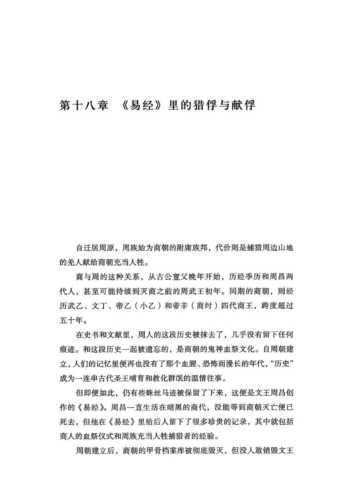
原书阅读器页 356原书物理 PDF 页 354印刷页 342
《说文》：“俘，军所获也。”军队虏获敌方之人员财物谓之孚 ……古人认为此乃光荣之事，故曰“有孚光”，未济六五云：“君子之光有孚。”句意同此。[[fn:2]]
〔按语：孚=俘，俘虏政策。这应是主席赞同高亨的地方。〕
只不过，高亨撰写研究《易经》的相关著作时，商朝杀人献祭的考古成果尚未引起足够的注意，周人曾长期替商朝捕俘的历史也尚未被揭露，所以学界对《易经》中的“孚”还不够重视。
《易经》是商朝末年的产物，释读其中的文字，需要参照商人的甲骨文。甲骨文的“孚”，写作（甲骨文），字形是一只手抓住一个儿童，乃俘获之意，且特指捉来献祭的人牲。
如殷墟甲骨占卜辞：“贞：我用罔孚？ ”（《合集》903正）翻译为白话是，“占卜：我要不要用猎网捕获俘虏（并献祭）？ ”这个“罔”是象形字，字形为一人双手举网。这说明商人捕俘用的网具，造型是一张网系在两根长木柄上。此外，甲骨卜辞里还有“用孚”，即杀俘虏献祭。
《合集》903正："贞：我用罔孚。”（图）
用猎网（罔）捕获俘虏之事，在《易经》中也有记载，如晋卦初六爻为：“罔孚，裕，无咎。”意为，用网捕猎俘虏，有大收获，没有灾祸。此卦名“晋”，本意是进攻，甲骨文写作（甲骨文，形似U），字形是两支箭射中同一个靶子。
此外，在《易经》多个卦，如大壮、解、损、益、井、革、丰、未济等的爻辞中，都有“有孚”，即占卜显示会有所俘获。自亶父迁居周原，周人一直为商朝捕猎羌人，所以周昌在研究《易经》占算方法时，很关注预测捕俘的结果。
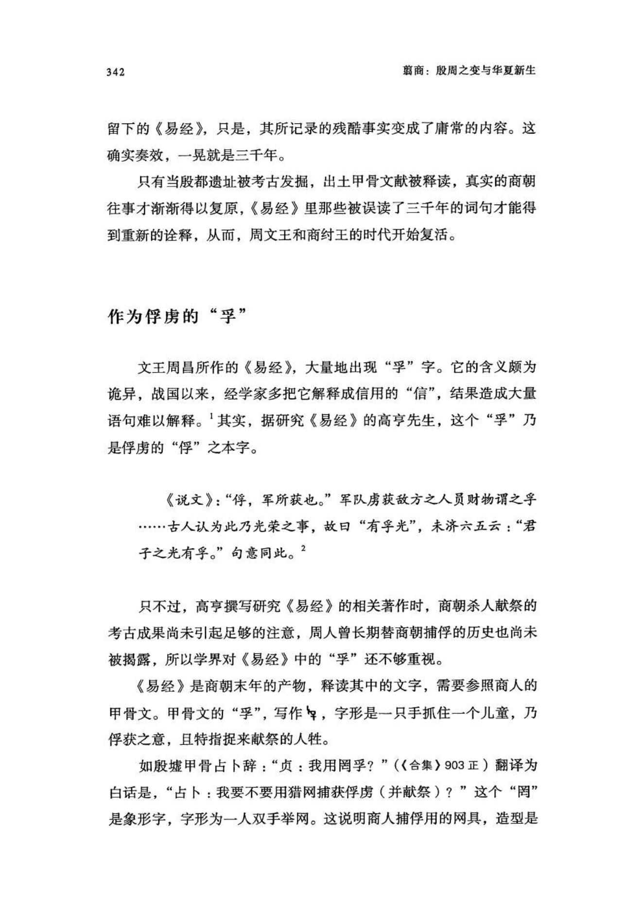
原书阅读器页 357原书物理 PDF 页 355印刷页 343
全是捕俘技术的，是需卦。周人捕猎俘虏的经验，在需卦中有很多记载。“需”通“须”，字意是等待。这个卦主要是有关设伏和诱敌的技巧的。
有孚。光亨，贞吉。利涉大川。
初九：需于郊，利用恒。无咎。
九二：需于沙，小有言，终吉。
九三：需于泥，致寇至。
六四：需于血，出自穴。
九五：需于酒食，贞吉。
上六：入于穴，有不速之客三人来，敬之，终吉。
〔按语：需卦〕[[editor-fn:1]]
先看卦辞：“有孚。光亨，贞吉。利涉大川。”意为，会有所俘获，很荣耀，举行祭祀，占算的结果吉利；有利于渡过大河。
前面三条爻辞有“需于郊”“需于沙”和“需于泥”，分别是讲在郊野、沙地和泥泞中设伏。
初九爻曰：“需于郊，利用恒。无咎。”大意是，在郊野设伏，必须有耐心，结果没有灾祸。
九二爻曰：“需于沙，小有言，终吉。”大意是，在沙地设伏，但周人为此发生了小的争论（可能是对设伏地点有不同意见），最终的结果吉利，有俘获。
九三爻曰：“需于泥，致寇至。”大意是，在泥泞中设伏，终于等到敌寇进入伏击圈。
六四爻曰：“需于血，出自穴。”可能是说，在袭击敌村落的战斗结束后，地上还有流血的伏尸，但有些周军不急于撤走，并在村内再次设伏，等藏匿者（逃入地窖中）出现时将其捉获。
九五爻曰：“需于酒食，贞吉。”可能是说，假意举行招待宴会以诱俘对方，占卜的结果吉利。
显然，上述这些战术来自很多成功的战例，应是自亶父以来周人积累的捕俘经验。
最后一条上六爻曰：“入于穴，有不速之客三人来，敬之，终吉」 如前文所述，这句爻辞的意思大致是说，周人的捕俘生涯始于三位不速之客到豳地窑洞里拜访亶父，邀请周族定居周原。
〔编者注1〕知乎上的需卦解 https://zhuanlan.zhihu.com/p/617211109
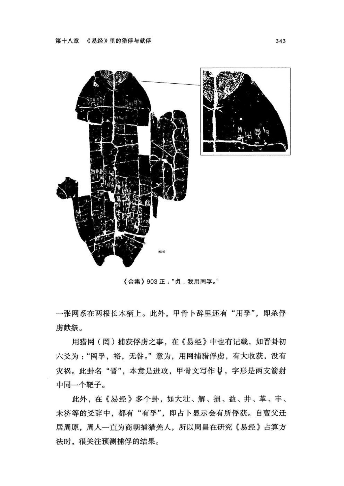
原书阅读器页 358原书物理 PDF 页 356印刷页 344
《易经》里为何会有这么多周人生活的真实记录？这便涉及周昌创作《易经》的目的：研究各种事物背后的因果联系，最终建立一套翦商的理论和操作方法。对此，我们后面会专门介绍。
《易经》从未记载过周人捕俘的数量，但前述文王大宅地窖的一片甲骨（H31：3）给我们提供了难得的信息：“八月辛卯卜曰：其梦启；往西，亡咎，获其五十人？ ”显然，这是文王为捕捉五十人而占卜。看来，周人每次捕俘的数量在数十人范围，不算太大。
逃脱的公羊，顽抗的羌酋
《易经》的大壮卦也是关于捕猎俘虏的，而且爻辞中多次出现了公羊（羝）被捕获和逃脱的场景。
大壮：利贞。
初九：壮于趾。征，凶。有孚。
九"一：贞吉。
九三：小人用壮，君子用罔。贞厉。羝羊触藩，羸其角。
九四：贞吉，悔亡。藩决不羸，壮于大舆之輹。
六五：丧羊于易。无悔。
上六：羝羊触藩，不能退，不能遂。无攸利，艰则吉。
周人捕俘的对象是羌人。甲骨文“羌”的字形，羊头，男人身，所以大壮卦里的公羊应是羌人的代称。爻辞中频繁出现的“壮”字，高亨解释为“戕”，也就是伤。[[fn:3]]
初九爻曰：“壮于趾，征，凶，有孚”。意思是，脚会受伤，出征的结果凶险，但有所俘获。
九三爻曰：“小人用壮，君子用罔。”意思是，对地位低的羌人（小人），可以打伤以后俘获（用壮），但对于部族的酋长（君子），最好用猎网捕获，以避免其受伤。这自然是因为，在商人那里，人牲的地位越高越珍贵，最好保证其无伤损。殷墟甲骨显示，商王会用“羌方伯”献祭，这种羌人首领也最受商王列祖列宗的喜爱。
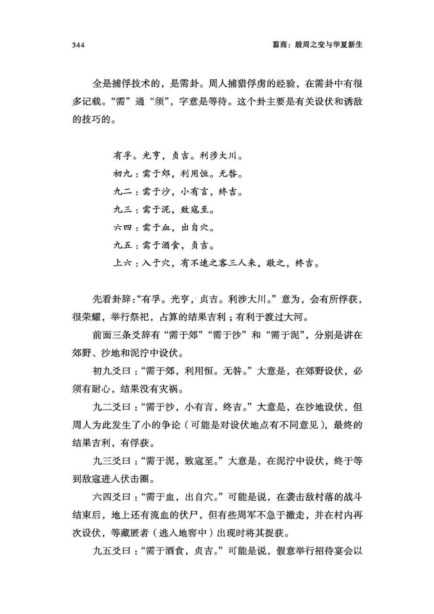
原书阅读器页 359原书物理 PDF 页 357印刷页 345
此外，有些还有利用价值的俘虏，可能会被周昌释放，委以某些职务。《墨子•尚贤上》有一处记载说：“文王举闳夭、泰颠于置罔之中，授之政，西土服。”意思是说，闵天和泰颠都是文王在猎网中发现的人才；文王让他们管理政事，于是西土部落皆归附周邦。
这可能是周昌为争取某些特定部落的归附，对俘获的上层人物的一种利用。但有这种好运的俘虏肯定是极少数。此外，《墨子》的这处记载也颇为诡异，不知它是如何获取蛮荒时代的周族信息的，所以它的本意也可能是说，闳夭和泰颠原本就是用网捕猎的猎人，后来得到了周昌的重用。
回到大壮卦的九三爻，爻辞继续说，“贞厉”，即占卜的结果不太顺利；然后，“羝羊触藩，羸其角”，即公羊冲撞到篱笆上，羊角被篱笆绊住。这似乎是比喻羌人首领被猎网捕获。
九四爻曰：“贞吉，悔亡。藩决不羸，壮于大舆之輹。”意思是，占卜结果吉利，没什么后悔的；公羊又撞破了篱笆逃走，还破坏了大车的辐条。这可能是隐喻被网住的羌人首领又逃走了，还在抵抗乘车追逐的周军时打坏了车辆。可见，周人是驾着马车捕俘的，而且捕捉完整且没受伤的首领的难度要大得多。
六五爻曰：“丧羊于易。无悔。”显然，这里用的是商朝先祖王亥“丧牛于易”的典故，但用代表羌人的羊替换了牛，应当是隐喻某些差点被捕获的羊（羌人）逃脱了。占卜的结果是不需要后悔。可见，周昌在使用商人先祖的掌故时，未必忠实于原意，或者说，他更重视古为今用。
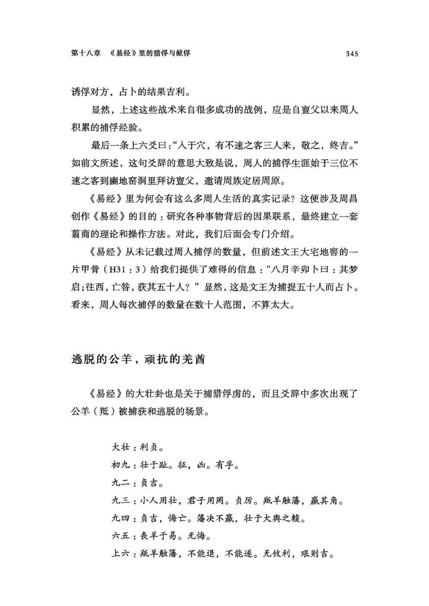
原书阅读器页 360原书物理 PDF 页 358印刷页 346
上六爻曰：“羝羊触藩，不能退，不能遂。无攸利，艰则吉。”意思是，没能逃脱猎网的羌人首领，就像羊角被缠住的公羊一样无法进退。占卜的结果是没什么收获，经历一番艰险，反倒有吉利的结局。
那么，大壮卦为何要用公羊代表羌人，还写得这么隐晦？本书认为，这可能是因为周人和羌人有古老的同宗亲缘，对周族来说，替商朝捕猎羌人在道义上是一种耻辱。所以，即便创作《易经》时，周昌已经比较商化，使用的也是商人的语言和思维，但他还是表达得非常隐晦，甚至不愿写出“羌”字。而且，在《易经》中，周昌记录捕羌用的都是“孚”字——这个字不带族群含义，应该也有不触及周人隐痛之意。
押解俘虏的经验
除了捕俘经验，《易经》的内容更多是有关如何捆绑和养活羌俘的，既要保证他们不能逃跑，也要让他们不至于因为伤痛和饥饿而死。
睽卦九四爻中有“交孚”二字。甲骨文的“交”字，写作（甲骨文），像人的双腿呈交叉之形，所以“交孚”可能是指在押送途中宿营时，要把俘虏的双腿捆绑起来以防止其逃走。从龙山时代到殷墟的各种人祭坑，常见有绑起双腿活埋的尸骨，可能也属于“交”。
小畜卦六四爻曰：“有孚，血去惕出，无咎。”[[fn:4]] 意思是，有俘虏，为他们止血，消除他们的恐惧，就不会有麻烦。
大有卦六五爻曰：“厥孚交如，威如。吉。”意思是，有俘虏被绑了起来，但还是气势汹汹。这是吉利的卦象。另，家人卦的上九爻“有孚威如，终吉”描绘的也是类似场景。
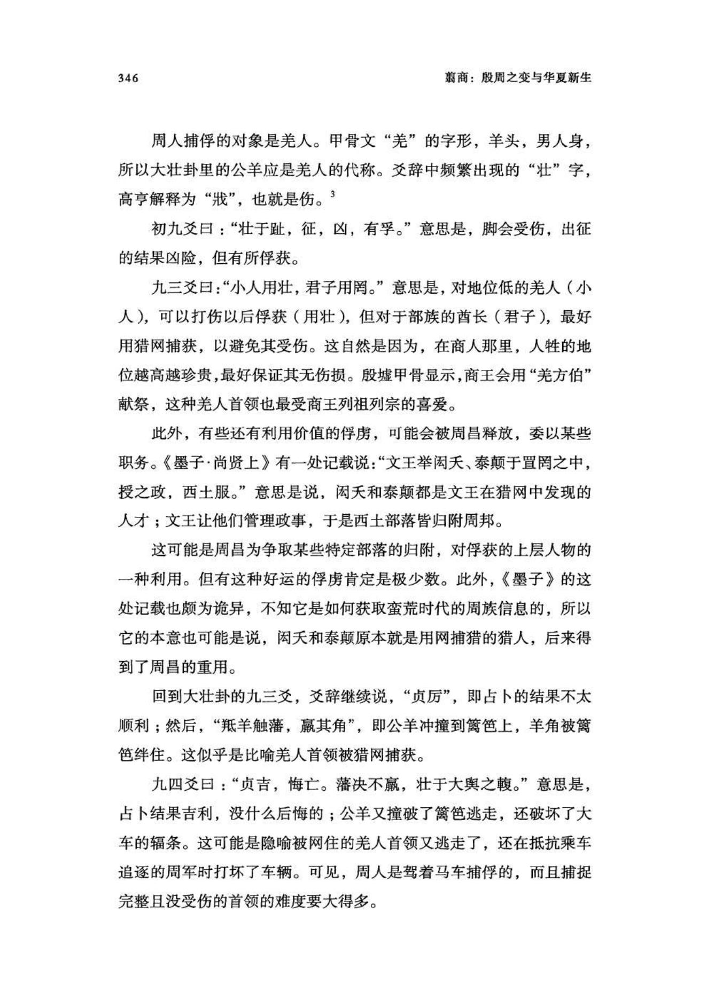
原书阅读器页 361原书物理 PDF 页 359印刷页 347
“吉”和“终吉”显然不是说俘虏的命运，而是说占算者周昌：商朝喜欢接收精壮的人牲，倘若捉到的俘虏英武健壮，就更容易押解到殷都而不至于死在路上，周人自然能得到更多嘉奖。
垢卦初六爻有“孚跳躅”，说的是俘虏走路蹒跚瘠腿。这可能是在被抓捕中受的伤，也可能是不听命令被殴打所致。该卦九三爻为“臀无肤，其行次且。厉，无大咎”，意思是，（俘虏）臀部被打得溃烂，致使走路困难；占算的结果是有磨难，但没有大的灾害。另，夬卦九四爻也有“臀无肤，其行次且“，看来这种情况很常见。
前述需卦的内容是关于设伏和偷袭，但周人也有和敌人正面交锋的时候。中孚卦六三爻曰：“得敌，或鼓或罢，或泣或歌。”这应该是指双方有准备的会战，会敲鼓以助军威。“或”表示两种选择，或者击鼓进军，或者仓皇撤退（罢）；结果也有两种，或是战败，幸存者哭泣，或是胜利，战胜者高唱凯歌。
中孚卦九五爻说的就是战胜的场景：“有孚挛如。无咎。”“挛如”是俘虏捆成串的样子。甲骨文的“挛”字，写作（甲骨文），像一手提两串或三串丝绳之形，可引申为牵着成串的俘虏。小畜卦九五爻也曰：“有孚挛如，富以其邻。”这个“富以其邻”可能指捕获了大量俘虏，自己和邻居们都会富裕起来。看来，周人是部落武装出征，捕俘、进贡之后获得的赏赐，全族人都能分享。
比卦初六爻曰：“有孚，比之，无咎。”意思是，有俘虏之后，把他们排队（绑起来）就不会有麻烦。而且，“有孚，盈缶。终来有它，吉”，是说还要用陶盆盛满饭给他们吃，即使发生什么变故，最终也会吉利。
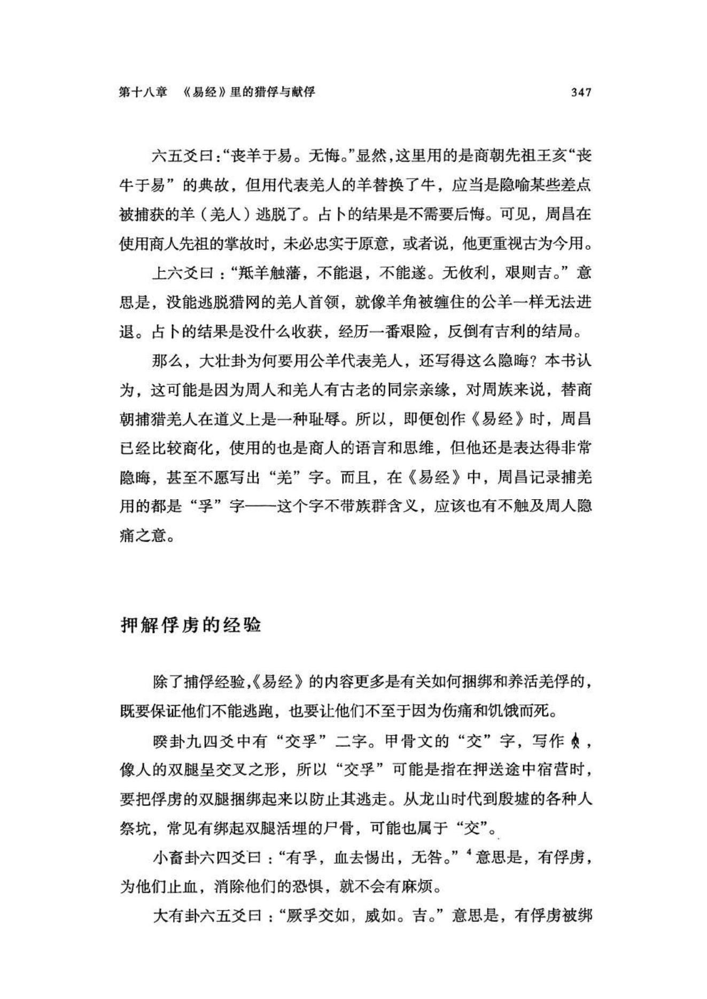
原书阅读器页 362原书物理 PDF 页 360印刷页 348
泰卦则记载了另一种情况。九三爻曰：“勿恤其孚，于食有福。”似乎是说过于吝惜食物，不肯给俘虏吃。接着，六四爻则曰：“翩翩，不富以其邻，不戒以孚。”意思是说，倘若因没有看管好俘虏致其伺机逃跑，那大家就都没有了发财的机会。
随卦的内容更复杂，主要是讲追捕逃跑的俘虏。
随：元亨，利贞，无咎。
初九：官有渝，贞吉。出门交有功。
六二：系小子，失丈夫。
六三：系丈夫，失小子。随，有求，得利。居贞。
九四：随有获，贞凶。有孚在道，以明，何咎。
九五：孚于嘉，吉。
上六：拘系之，乃从维之。王用亨于西山。
六二爻为“系小子，失丈夫”，即捕获并捆绑了男童，但成年男人逃跑了。六三爻则相反，”系丈夫，失小子”。周人捕俘经常是偷袭羌人的部落和家宅，所以捕猎对象会有成年男女和老弱妇孺各种人。
甲骨文的“系”字，写作（甲骨文，形似彳），像一个人被绑住脖子，或者双手和脖子绑在一起。武丁的甲骨卜辞中，有“羌系”“十羌系”（《合集》1097）的记载，指的是商王捕获并捆绑羌俘。到商代晚期已很少见商王亲自捕俘的卜辞了，因为此时捕俘的工作主要是由周人这种附庸部族来完成的，已不需要商朝亲自动手。
《合集》1097：……羌。王占〔曰〕……屮（又）二日癸酉……十羌系……十丙屮（又）……（图）
九四爻和九五爻的“有孚在道，以明” “孚于嘉”，像是在推算俘虏逃跑的去向，然后加以追捕。本卦名“随”，本身就是追捕之意。
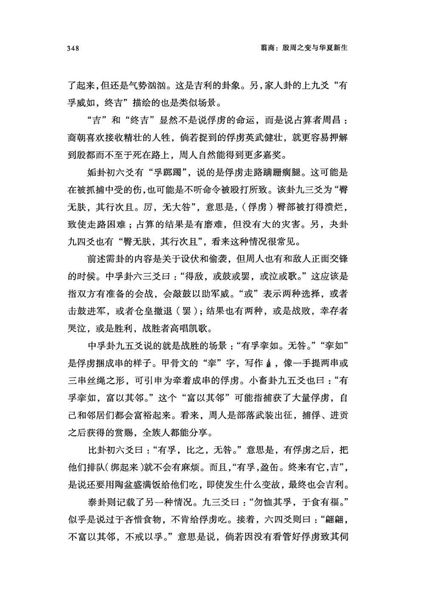
原书阅读器页 363原书物理 PDF 页 361印刷页 349
上六爻说的则是捉住了逃俘，更结实地捆绑起来（从维之），并押到殷都：“王用亨于西山。”按高亨的解释，“亨”通“享”，即向神灵献祭，贡献饮食。殷都西边紧邻太行山脉，可能商王会定期进山祭祀，而周昌这次押送来的俘虏正好用上了。[[fn:5]]
关于周昌如何获得去往殷都的机会，以及到殷都后的遭遇，《易经》里还有一些记载，我们后面会详细介绍。
当然，频频外出捕猎俘虏，并不意味着周人已经是西土最强大的部族，可以高枕无忧了。因为结怨太多，周族人也会遭到其他部落的报复，导致他们时刻生活在惊惧的警戒之中。这在《易经》中也有反映。
比如，蒙卦上九爻曰：“不利为寇，利御寇。”意思是说，不利于入侵别人，但有利于防御别人的人侵。再如，鼎卦九二爻曰：“我仇有疾，不我能即，吉。”意思是说，我的仇人生病了，无法来攻击我，占算的结果吉利。这都是周昌在测算周族会不会遭到敌对部族的进攻。
此外，《易经》中有三个卦都包含“匪寇，婚媾”，意为不是入侵者，而是来寻求缔结婚姻的（外族）人。贲卦六四爻和屯卦六二爻的场景都是聚落外出现了陌生的人群，还有人赶着马车，被怀疑是入侵者到来。
贲如、皤如，白马翰如，匪寇，婚媾。（贲卦六四爻）
先张之弧，后说之弧。匪寇，婚媾。（睽卦上九爻）
屯如、邅如，乘马班如，匪寇，婚媾。（屯卦六二爻）
可见，周族人生活得相当警觉。
当时，西土还没进入国家时代，部族间的劫掠战争频频发生。另外，这也说明，周人及邻近各族都奉行族外婚制，但即便是部落间的通婚也难以避免战争发生。
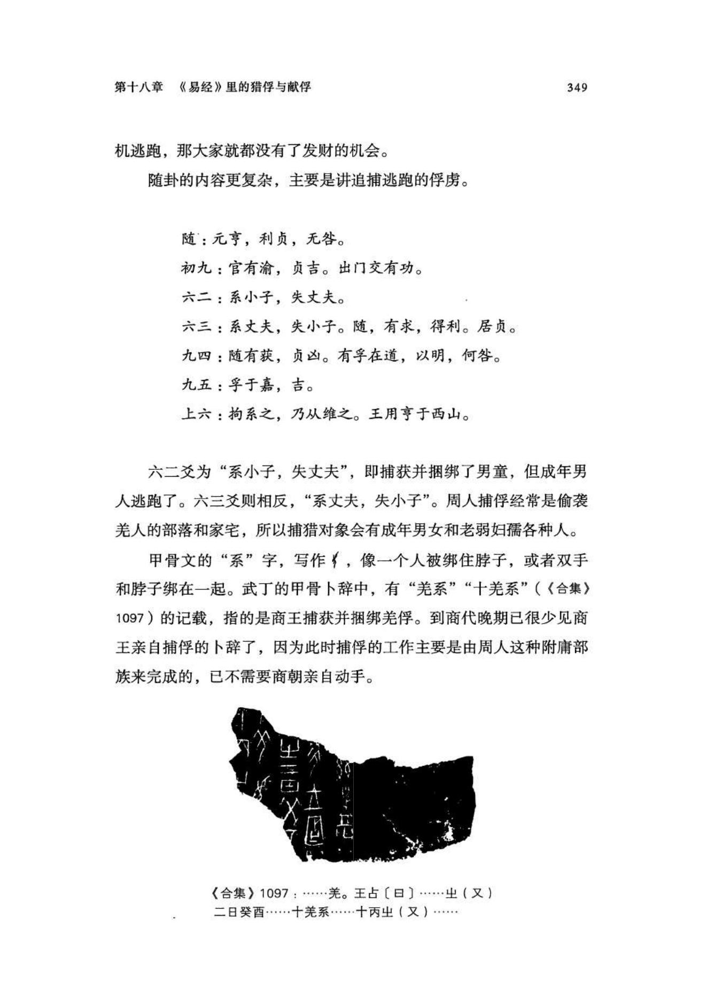
原书阅读器页 364原书物理 PDF 页 362印刷页 350
面见纣王的机会
在文王生命的前五十年里，日子一直过得还算正常。那时，他是一位臣服于商朝的部族长老，除了时而沉迷于隐秘的占卜实验，这样的生活还看不到有什么突变的可能。
本来，自季历死后，周族首领就再没有去殷都的记录，这一时期的商王卜辞里也从未出现过周族。然而，某些巧合还是让周昌有了见商王的机会。史书里没有记载此事，但出土的甲骨文提供了线索。
周原甲骨H11：3放大后的照片（图）
在文王大宅窖穴里挖出的甲骨上，刻写着三行细如蚊足的微雕小字，从左到右依次是：“衣王田；至于帛；王获田？ ”和在殷墟发现的甲骨一样，“衣”通“殷”，“田”是田猎、狩猎。卜辞解释为：“殷（商）王来打猎了；到了帛地；王打猎会顺利吗？ ”
殷王就是商纣王。至于帛是何地，有研究者认为在今陕西省大荔县羌白镇，[[fn:6]] 也就是渭河与黄河的交汇处稍北。这是当初武乙王（纣王曾祖父） “猎于河渭”、被雷击而死之处。纣王这次西巡可能是要祭祀武乙王。
此次关中之行，在殷墟出土的甲骨卜辞里没有记载，但大概是纣王在位第十几年的事情。看来，周昌极度关注纣王的驾临，不然不会偷偷占卜。毕竟，商王已经有两代人、几十年没来过西土了，而这可能会给周族带来灾祸，或者机会。
周原甲骨H31：2摹写本：唯衣鸡子来降，其执？暨厥史（事）？在帝尔卜曰：南宫邰其作？（图）
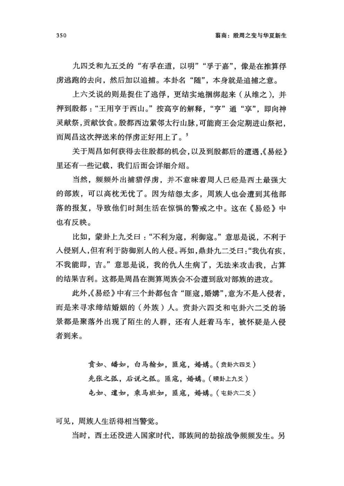
原书阅读器页 365原书物理 PDF 页 363印刷页 351
文王大宅的另一片微雕甲骨（H31：2）卜辞，则涉及另一位商朝重要人物“衣鸡子”，也就是殷箕子。
周昌先占卜：“殷商的箕子要驾临（周原），会被他逮捕吗？还是可以侍奉他？”接着，周昌又在名“斿尔”的地方占卜：“让南宫邰负责吧？ ”
这条关于箕子的卜辞，学者一般解释为：周武王灭商后，箕子来到关中投降周朝时，周武王占卜应如何接待。但这种解释未必成立。
据《史记》，箕子是商纣王的近亲（后世注家说是庶兄或者叔父）。在周武王伐商之前，箕子曾经触怒纣王，被关进了监狱，靠装疯才活下来（“乃被发佯狂而为奴”）。[[fn:7]] 而据《尚书•洪范》，周武王灭商、进占殷都之后，”命召公释箕子之囚”，还当面向箕子请教治国之道。从《史记》和《尚书》的这些内容来看，刚占领殷都时，武王和箕子已经有交往，按理说不需要箕子舍近求远，再到关中投降一次。
所以，H31：2的“鸡子来”卜辞应当是周昌时期的，和纣王到帛地行猎是同一事件：纣王驻理在关中东部，派箕子再向西视察周族等关中番邦。在殷墟卜辞中，“降”一般指神灵降福或亲自降临人间。而箕子是商朝重臣，对周邦来说自然非常尊贵，所以“来降”并非来投降，而是驾临之意。同时周昌也非常紧张，担心箕子此行会逮捕自己（其执？）——他可能是联想到了父亲季历在殷都的下场。
至于南宫邰，史书中查无此人，但武王灭商时，有位将领叫南宫括：”命南宫括散鹿台之财，发巨桥之粟。”（《史记•周本纪》）所以，“邰”和“括”也许是同一字的不同写法，也许两人是同一家族之人。
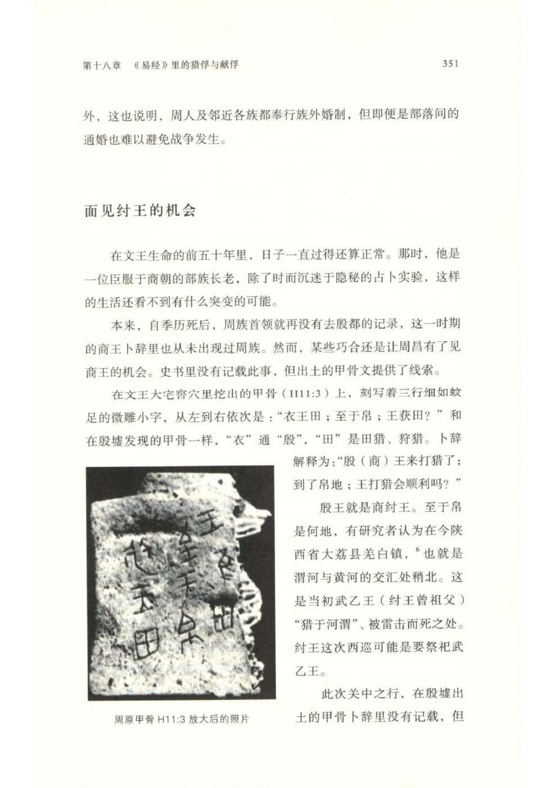
原书阅读器页 366原书物理 PDF 页 364印刷页 352
从这些零散的信息推测，周昌应该是在接待箕子时赢得了这位商朝重臣的好感，这才获准到帛地拜见纣王。对周昌来说，这是个求之不得的机会：往常，他能见到的最高级别的商人是老牛坡的崇侯，现在则先是接待商朝大臣，接着还要去朝拜商王，自然有受提拔的机会。
目前尚未发现关于周昌首次朝见纣王的记载，但肯定比较顺利，因为周昌又获得了去殷都的机会。这次他可能还押送着一批羌人俘虏。对此，《易经》里有多处记载。
关于周昌去殷都献俘途中的经历，前面已做了介绍。这里再补充一点关于箕子的分析。在《史记》等文献里，箕子是商朝忠臣，因忠言逆耳而招来纣王的震怒和牢狱之灾。但实际情况可能要复杂得多。作为王室宗亲，箕子地位极高，倘若王朝形势有变，他是离王位很近的人——商朝一直有王位兄弟相传的做法（虽然最近几代都是父子相传，但传统并非没有再现的可能），所以他和纣王的关系比较微妙。考虑到纣王在统治后期经常压制王室近亲，并因此招致越来越多的反对，不排除箕子巡视关中，对周族等番邦潜在的军事实力有了一些了解后，暗中萌生拉拢番邦想法的可能，以备万一王朝有变时，可以纠集起忠于自己的武装。
但箕子和周昌应该都不会想到，他们的这次偶然相识会带来什么样的后果。
目睹殷都献祭仪式
周昌押送俘虏到殷都后，自然会目睹商人的各种杀俘献祭仪式。
先是在商王宫廷中举行献俘仪式。夬卦曰：“扬于王庭，孚号有厉。”“扬”，是臣民颂扬王的伟大，“扬于王庭”是商周时臣下参见王的习语。“孚号有厉”意思是，有俘虏大声惨叫，说明可能同时有杀祭举行。
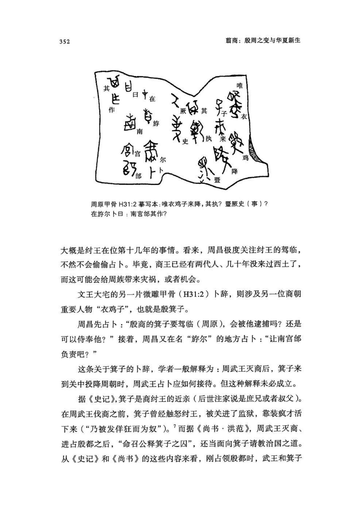
原书阅读器页 367原书物理 PDF 页 365印刷页 353
《礼记•郊特性》记载：“殷人尚声，臭味未成，涤荡其声。乐三阕，然后出迎牲，声音之号，所以诏告于天地之间也。”商人祭祀最重视声音，所谓“殷人尚声”。献祭的动物大声地嚎叫，是在向天界神祇报告祭品强壮、合格，所谓“声音之号，所以诏告于天地之间也”。《礼记》是东周时人编写的，当时的人已经不太知道商人的人祭行为，所以才会以为商人和周人一样都只用家畜献祭。还原到商代的真实场景，这显然包含人牲的叫喊。
观卦曰：“盥而不荐，有孚颙若。” “盥”，本意是礼仪性地倒水洗手，也指用酒洒地、告慰地神之礼。但不管是洗手还是倒酒，都是献祭仪式开始阶段的程序。
“荐”是指杀人献祭，后世“荐俘”一词即从此来，如《逸周书•世俘》有“荐俘殷王鼎”。但观卦的内容有点奇特：这次不知何故，在“盥”的程序后，却迟迟没有开始杀俘，所谓“盥而不荐”。这应该是周昌初次参加殷都的献祭仪式，虽不懂其中的操作原理，但却在紧张等待中牢牢地记下了自己的见闻。[[fn:8]]
“颙”，本意是头大的样子，但不知为何，给《易经》做注解的唐代孔颖达将其解释为“严正之貌”。其实，它在这里是翘首观望的样子：仪式开始后，有些俘虏在紧张地顾盼。
萃卦也是周昌到达殷都后的见闻，卦辞中有商王杀牛祭祀（用大牲）的内容：“亨，利贞，用大牲吉。”
其中，初六爻曰：“有孚不终，乃乱乃萃，若号，一握为笑。勿恤。往，无咎。”意思是说，有些俘虏精神崩溃，试图逃走，或者扎堆在一起，大声嚎叫，还有人因精神失常而狂笑。但结论是，不用担心，应当继续进行下去。
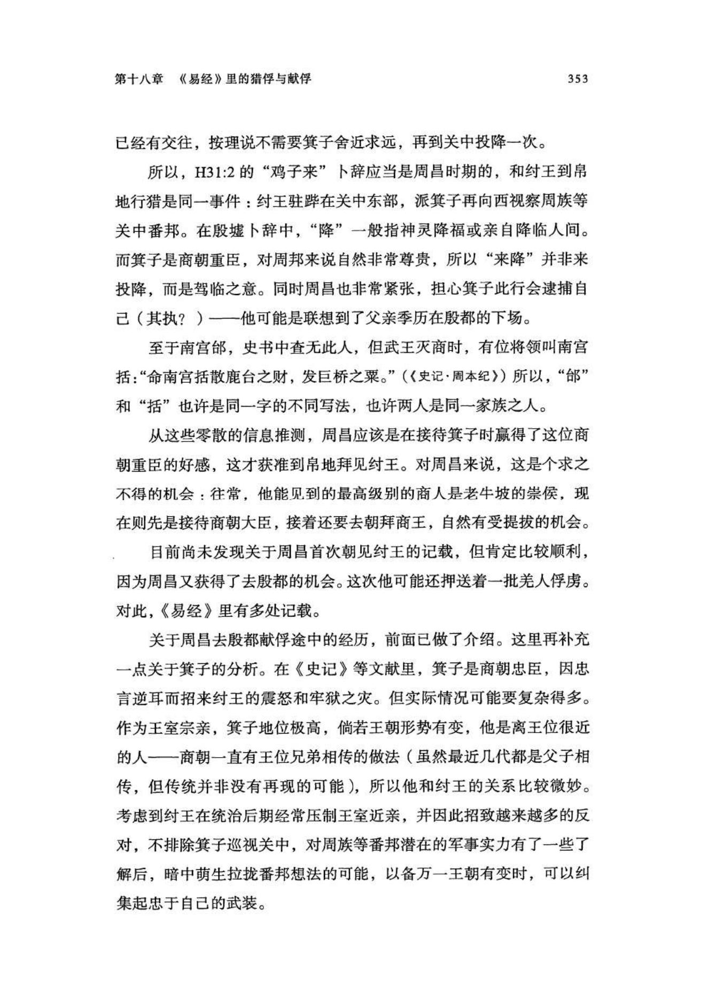
原书阅读器页 368原书物理 PDF 页 366印刷页 354
六二爻曰：“孚，乃利用禴。”意思是说，俘虏正好用于禴祭。在商代，禴是一种在春天举行的祭祀仪式。此外，升卦九二爻曰：“孚乃利用禴，无咎”，也是同样内容。
兑卦九二爻曰：“孚兑，吉，悔亡。”“兑”，即“悦”，开心。这是说，在殷都的日子里，有些俘虏似乎看到某些生机，变得乐观了起来。但到九五爻，就是“孚于剥，有厉”，被剥皮，惨叫。
坎卦曰：“有孚，维心，亨。”意思是说，掏出俘虏的心脏，烧熟后献祭。心脏是人体供血中枢，古人对其非常重视，认为是人的心智和魂魄集中之地，最适合敬献神灵。比如，玛雅文明和阿兹特克文明的人祭仪式就最为重视剖心献祭。除了坎卦，《易经》其他卦也有用人心献祭的记载。《史记》亦记载，商纣王“剖比干，观其心”。看来，这种行为在商人献祭中比较常见。
除了捕俘和献祭，《易经》里还有周昌初到殷都的诸多观感和经历，特别是他被纣王囚禁之后的生活。
注释
1《易传•杂卦》：“《中孚》，信也。”《杂卦》可能是孔子门徒的作品，属于战国前期。
2高亨：《周易古经今注》，第176页。高亨将《易经》约三分之一的孚字解释成“俘二其余的或解释成“罚”，或按传统解释成“信”。本书认为，《易经》中几乎所有的孚字都可释读为俘。在春秋时期创作的《诗经》中，“孚”字确实有信用之意，但《易经》卦、爻辞产生的时间更早，属于商代末期，需要用甲骨文和商代考古成果来解释。
〔按语：历史高度〕
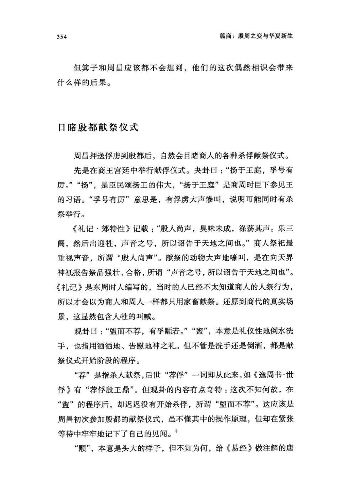
原书阅读器页 369原书物理 PDF 页 367印刷页 355
3高亨：《周易古经今注》，第256页。
4小畜卦六四爻辞，孔颖达正义：“信能血去、惧除，乃得无咎。”
5高亨认为，随卦上六说的是文王周昌被释放回周原后祭祀西山。参见高亨《周易古经今注》，第176、213页。这可能是因为高亨先生没有注意到随卦全是关于捕俘和献俘的内容。
6陈全方：《周原与周文化》，第137页。
7《史记•宋微子世家》：“纣为淫泆，箕子谏，不听。人或曰：‘可以去矣。’箕子曰：‘为人臣谏不听而去，是彰君之恶而自说於民，吾不忍为也。'乃被髪佯狂而为奴。”
8高亨认为，观卦卦辞说的是祭祀用人牲。他的解释是，盥的程序后，迟迟未“荐”牛牲，是因为准备使用大个头的人牲：“祭不荐牲，乃因有俘，可杀之以当牲也。故曰盥而不荐，有孚颙若。”这种解释的预设前提是，荐牛牲是正常的，荐人牲不正常，但在商代，“荐”人牲是很常见的行为，不构成转折关系。参见高亨《周易古经今注》，第219页。
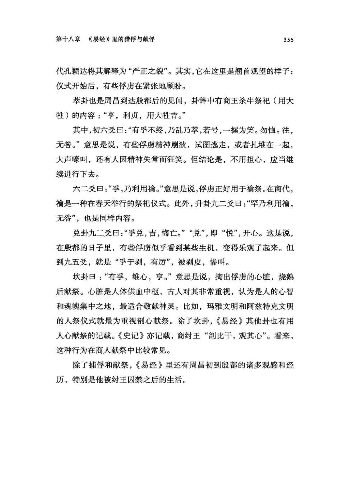
原书阅读器页 370原书物理 PDF 页 368印刷页 356
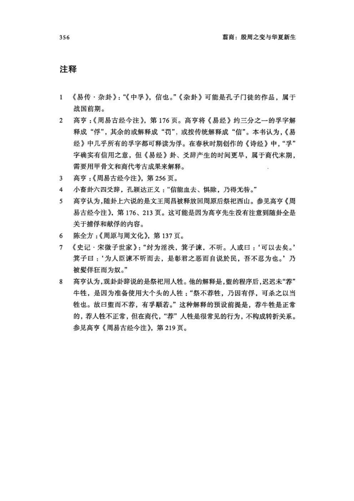
编辑札记
标记
先在正文中选择文字，再输入拼音；可用“拼音；简注”。